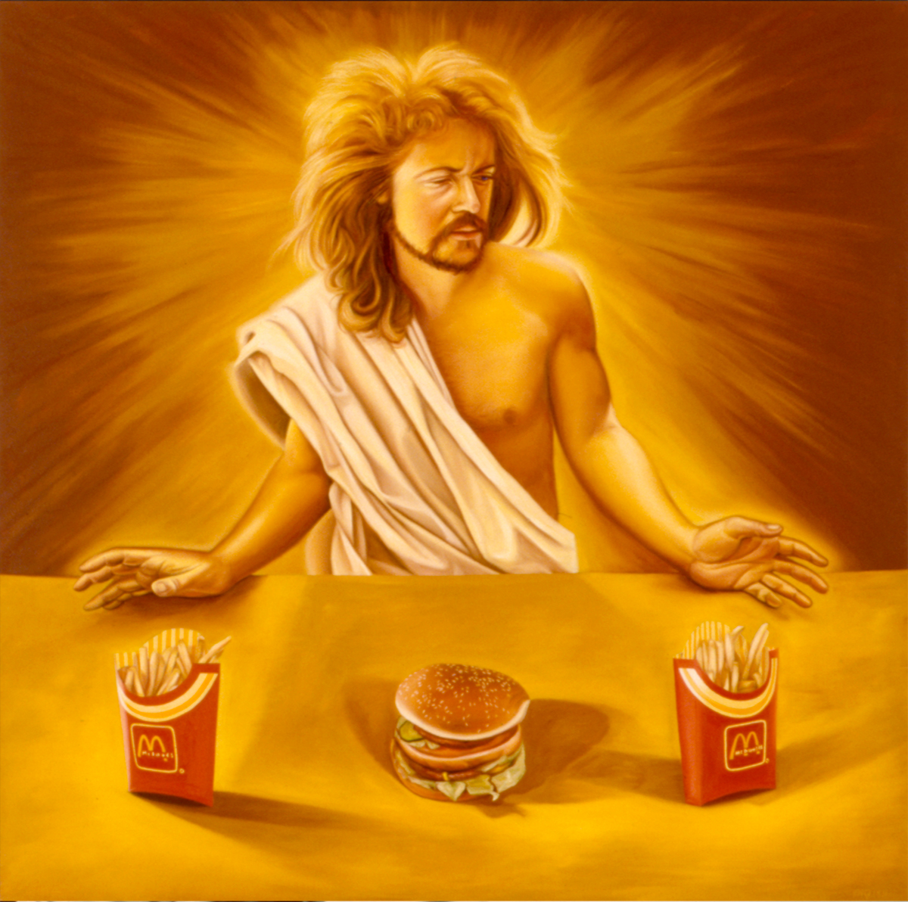
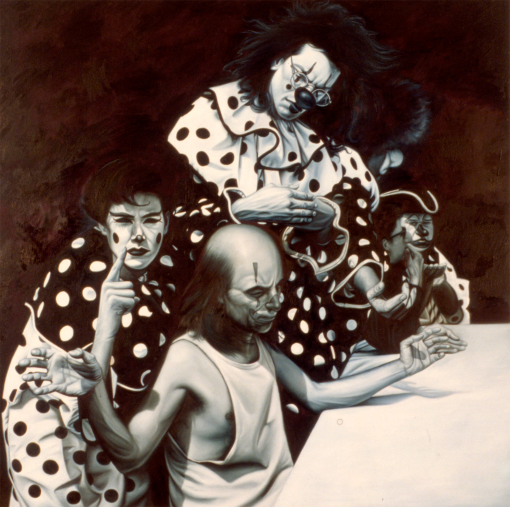
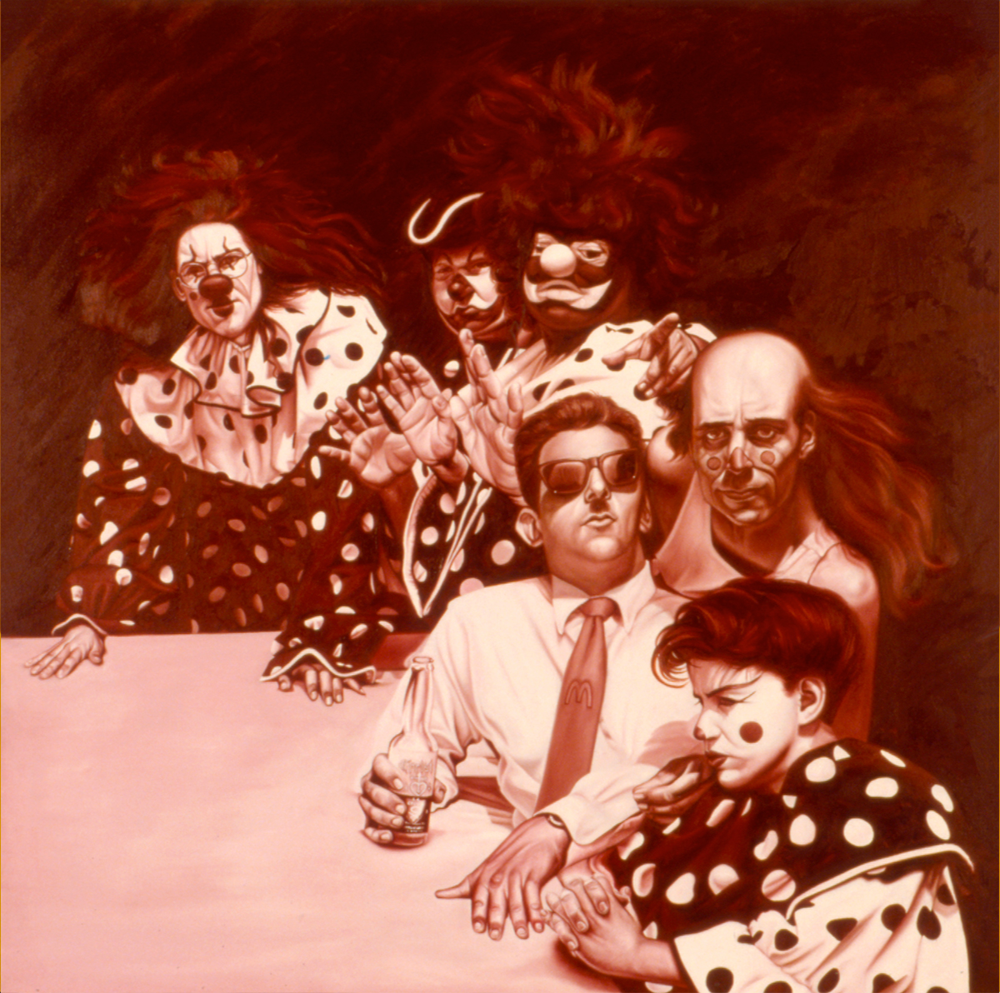

Ancillary Documentation

Literature
Ron English, Popaganda: The Art & Subversion of Ron English (San Francisco: Last Gasp, 2001), p. 142. ISBN 1-887128-60-3.

Teresa Wong, “Ron English Speaks a Language All His Own,” Museum & Arts Houston, June 1992, p. 37.
“Revelations Book II,” Juxtapoz Magazine, November–December 1999.
“Last Supper, 1993 by Ron English,” The Austin Chronicle, January 28, 1994.